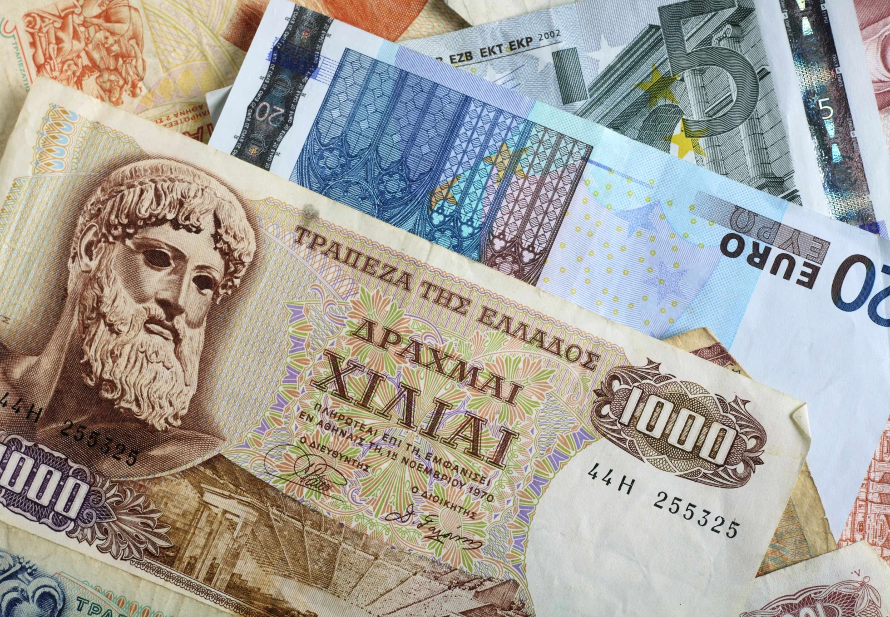

AIER ·
Greek crisis creates standoff between regulators and potential investors
Read the original
This week, Yanis Varoufakis, Greek Minister of Finance, stoked the fire that has been spreading across Europe since the Syriza victory in Greece with bold rhetoric that labeled the ECB’s threats to cut funding for Greek banks as political intimidation and promised to continue to move forward with his party’s anti-austerity revolution.
The EU-IMF troika had drawn a line in the sand, signaling that there would be consequences if Greece refused to comply with the set austerity terms. The Greek government, however, defiantly stated that it would “end the debt-deflation spiral,” claiming that their democratic mandate to challenge austerity is “not negotiable.” It also took steps to foster a strategic relationship with Russia, a move that has infuriated some and terrified others. Germany stood to lose a lot if Greece didn’t blink first as it could set an expensive precedent for undisciplined concessions across the weaker EU states.
Previously, the stand off between Greece and the Eurozone begged a basic question: cooperate or defect?
Earlier today, however, Europe sent a strong message to Greece by lifting the waiver on Greek government debt as collateral, effectively giving a green light for Greek bank runs as liquidity is on the verge of evaporating. (See press release here) This was just hours before Varoufakis was due to meet with German Finance Minister Wolfgang Schaeuble in Berlin.
A piece published earlier today by Paul Ormerod, economist and visiting professor at University College London, suggested that:
The game being played in the current Greek tragedy is a multiplayer one, but the principle is the same. The Greek government hints at a willingness to defect by cosying up to Putin’s Russia, scaring the Nato establishment. From Greece’s perspective, statements from hardliners in, for example, the European Central Bank (ECB) are equivalent to a policy of defection being played against them. No concessions, according to this strategy.
But at the end of the day, the problem with trying to apply game theory to the Euro standoff is that it requires rules and rational players. Unfortunately, as Varoufakis ironically stated, that might not be the case in Europe and “even Nash would be at a loss here.” That seems to be less of a concern as the cards now seem to be on the table.
Now, it might be time to pay attention to a less discussed relationship: that between Greece and its would-be investors, both foreign and domestic, especially now that the EU has shown its willingness to defect.
In a conversation earlier this week, Dr. Jerry Jordan, former President and Chief Executive Officer of the Federal Reserve Bank of Cleveland, stated that “there is no long-run solution to economic stagnation that does not include significant private investment in positive value added projects.” In a word, public funds cannot and will not be the solution to the Greek crisis. Why, then, focus only on those who would keep the Greek economy afloat and not those who would propel it out of crisis?
Jordan noted that as long as the internal real growth rate exceeds the external real interest rate, any amount of debt can be serviced. It would follow, then, that the focus in Athens must be on raising the internal real growth rate- or increasing productive private investment.
So, who are the real players in this game now? It would appear that the truly important stand off is between Greece and its potential investors. The focus cannot be solely on the troika, although political miscalculations could be catastrophic.
To play the game, investors must appear resolute that they will not invest in Greece so long as the conditions are not right, but ultimately be willing to invest in Greece. They must not “blink” as Greece appears to have done, but rather impress upon Greece that their investments are contingent on long-term structural reforms that make for healthy business environments. Athens must recognize that to save itself from ruin, it must embrace reforms that might be generally unpopular and uncomfortable in the short-term in order to enjoy more wealth and prosperity in the long term.
What remains to be seen, however, is if Greece’s inability to “print” money in order to satisfy its short-term necessities will drive them to act responsibly or if they will further cross the line in the sand drawn by Europe, forgoing a possibility to foster a productive relationship with investors, the only ones who can really save them now.
Ultimately, this might be the first test to see if the Euro really is “paper gold.”